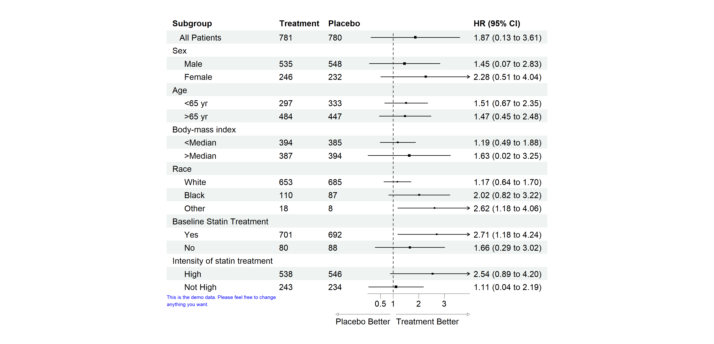
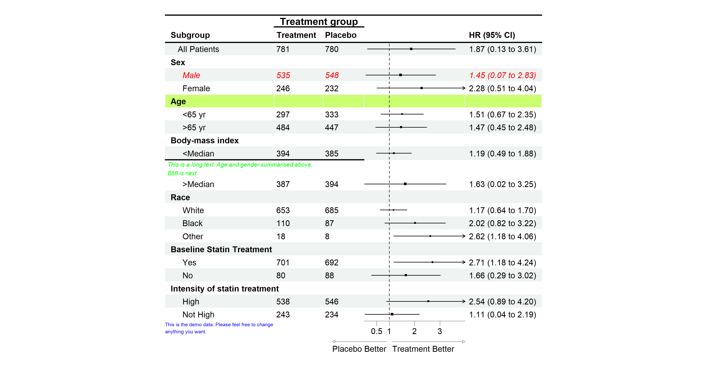
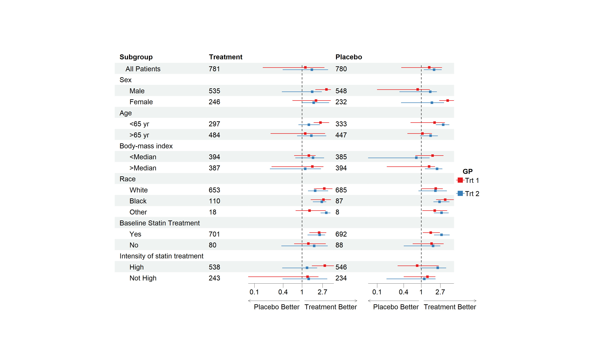

The goal of forestploter is to create publication-ready forest plots with minimal effort. This package offers more flexibility and customization options compared to other packages. The layout of the forest plot is determined by the provided dataset, and its elements are organized in a grid-like structure of rows and columns, much like a table. This design allows for easy manipulation of any plot component. For instance, the width of the confidence interval column can be controlled by adjusting the number of spaces in a blank character column.
Installation
You can install the development version of forestploter from GitHub with:
Install from CRAN
install.packages("forestploter")Install development version from GitHub
# install.packages("devtools")
devtools::install_github("adayim/forestploter")Basic Usage
The column names of the provided data will be used as the header of the plot. forest() draws the table and the confidence intervals. The rest is added with the pipe |>:
-
set_xaxis()sets the limits, tick marks and scale of the x-axis, and adds vertical lines. -
set_labs()sets the title, x-axis labels, footnote, arrow labels and legend labels. -
scale_sizes()scales the point sizes by study weights. -
forest_style()andset_style()set the graphical parameters.
This is a basic example that demonstrates how to create a forestplot:
library(grid)
library(forestploter)
dt <- read.csv(system.file("extdata", "example_data.csv", package = "forestploter"))
# Indent the subgroup if there is a number in the placebo column
dt$Subgroup <- ifelse(is.na(dt$Placebo),
dt$Subgroup,
paste0(" ", dt$Subgroup))
# NA to blank
dt$Treatment <- ifelse(is.na(dt$Treatment), "", dt$Treatment)
dt$Placebo <- ifelse(is.na(dt$Placebo), "", dt$Placebo)
dt$se <- (log(dt$hi) - log(dt$est))/1.96
# Add a blank column for the forest plot to display CI.
# Adjust the column width with space.
dt$` ` <- paste(rep(" ", 20), collapse = " ")
# Create confidence interval column to display
dt$`HR (95% CI)` <- ifelse(is.na(dt$se), "",
sprintf("%.2f (%.2f to %.2f)",
dt$est, dt$low, dt$hi))
# Define a style, it can be reused for other plots
st <- forest_style(base_size = 10,
arrow_type = "closed",
footnote = gpar(col = "blue", cex = 0.6))
p <- forest(dt[,c(1:3, 20:21)],
est = dt$est,
lower = dt$low,
upper = dt$hi,
sizes = dt$se,
ci_column = 4,
ref_line = 1,
style = st) |>
set_xaxis(xlim = c(0, 4), ticks_at = c(0.5, 1, 2, 3)) |>
set_labs(arrow = c("Placebo Better", "Treatment Better"),
footnote = "This is the demo data. Please feel free to change\nanything you want.")
# Print plot
plot(p)
The plot is a gtable, so it can be saved with ggplot2::ggsave() and combined with other plots, for example with patchwork::wrap_elements(). Set fit in forest_style() to let the plot fill the space it is given. The arguments of forest() used before version 1.2.0, such as xlim or footnote, and themes created with forest_theme() still work. The old arguments give a message pointing to set_xaxis() or set_labs(), and ?forest_theme shows how the theme settings map onto forest_style().
Editing the Plot
You may want to change the color or font of certain columns, insert text into specific rows, or add an underline to separate groups. The edit_plot, add_text, insert_text, and add_border functions are designed for these purposes. They can be chained with the pipe as well, after set_xaxis(), set_labs(), scale_sizes() and set_style(), which build the plot again:
g <- p |>
# Edit text in row 3
edit_plot(row = 3, gp = gpar(col = "red", fontface = "italic")) |>
# Bold grouping text
edit_plot(row = c(2, 5, 8, 11, 15, 18),
gp = gpar(fontface = "bold")) |>
# Insert text at the top
insert_text(text = "Treatment group",
col = 2:3,
part = "header",
gp = gpar(fontface = "bold")) |>
# Add underline at the bottom of the header
add_border(part = "header", row = 1, where = "top") |>
add_border(part = "header", row = 2, where = "bottom") |>
add_border(part = "header", row = 1, col = 2:3,
gp = gpar(lwd = 2)) |>
# Edit the background of row 5
edit_plot(row = 5, which = "background",
gp = gpar(fill = "darkolivegreen1")) |>
# Insert text
insert_text(text = "This is a long text. Age and gender summarised above.\nBMI is next",
row = 10,
just = "left",
gp = gpar(cex = 0.6, col = "green", fontface = "italic")) |>
add_border(row = 10, col = 1:3, where = "top")
plot(g)
Remember to add 1 to the row number if you have inserted any text before, as the row number will change after inserting text.
Complex Usage
If you want to draw CIs in multiple columns, you only need to provide a vector of the column positions in the data. As shown in the example below, the CIs will be drawn in columns 3 and 5, with the first and second est, lower, and upper values corresponding to those columns.
For more complex scenarios, such as drawing CIs by groups, you can provide an additional set of est, lower, and upper values. If the number of est, lower, and upper sets is greater than the number of CI columns, the values will be reused. In the example below, est_gp1 and est_gp2 are drawn in columns 3 and 5 as group 1, while est_gp3 and est_gp4 are drawn in the same columns as group 2.
This is an example of multiple CI columns and groups:
# Add a blank column for the second CI column
dt$` ` <- paste(rep(" ", 20), collapse = " ")
p <- forest(dt[,c(1:2, 20, 3, 22)],
est = list(dt$est_gp1,
dt$est_gp2,
dt$est_gp3,
dt$est_gp4),
lower = list(dt$low_gp1,
dt$low_gp2,
dt$low_gp3,
dt$low_gp4),
upper = list(dt$hi_gp1,
dt$hi_gp2,
dt$hi_gp3,
dt$hi_gp4),
ci_column = c(3, 5),
ref_line = 1,
nudge_y = 0.2,
style = forest_style(base_size = 10,
footnote = gpar(col = "blue"))) |>
set_xaxis(x_trans = "log") |>
set_labs(arrow = c("Placebo Better", "Treatment Better"),
legend_title = "GP",
legend_labels = c("Trt 1", "Trt 2"))
plot(p)